How to Use the BYU Pipeline Tools (Under Construction)
Hello friend,
You are here because you have decided to embark on an epic journey to complete a short film.
Look around you. You are in the midst of the most brilliant creative minds in the history of the world. Look down. You are one of those creative minds. Now all you need is a set of tools to help unlock your creative prowess and work in harmony with the titans around you.
My friend, if you seek those sacred tools then you have come the right place. These are the BYU Pipeline tools. These tools will help you unlock the mysteries of team work and harmony. And this documentation will be your guide to learning the full potential of these tools and thus uncover the full potential of you!
Read on and you will master your fate and take control of your destiny!
Best of Luck,
Pipeline Management
Pipeline Management
Table of Contents
Basic Overview
The pipeline tools are here to help you focus more on the art and less on the saving-the-files-into-the-right-place. It also provides some handy tools to make your life a little easier.
Getting Access to the Pipeline Tools
In order to have access to the pipeline you need to be a member of "the group". Talk to Seth and he will be able to add you.
Once you are part of the group open up a file explorer and naviagate to /groups/FILM/byu-pipeline-tools/. FILM will be the name of the group (ie grendel, dusk, etc). This directory is where all of the tools are located.
There will be a number of icons, most of which will be some humorous combination of the film name and the software. These icons will lauch the software and load all of our custom tools.
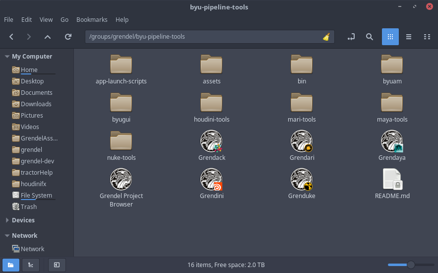To add these icons to your desktop:
- Right click on the icon
- Click 'Make Link'
- Right click on the link that was just created
- Click 'Move to' -> 'Desktop'
Hopefully that is the last time you will have to go into that folder. Should you find yourself interested in what else is there you can learn more in the advanced section.
Important Terms
The pipeline handles two different types of bodies: Assets and Shots.
Assets are either props or characters. Assets are composed of various elements: models, rigs, textures, designs, materials, and assemblies.
Shots are...well shots I guess. The elements that make a shot are animations, character effects, compositions, effects, layouts, lighting, and renders.
To better understand how the pipeline works you first should understand the life of these bodies. And to understand the life of a body you need to understand these terms:
Body Creation
In order to do anything you need to create a body. Assets are usually the first bodies to be created and then shots will be made from assets. When you create an asset you will give it a name and the pipeline tools will construct a bunch of folders to store the various elements of the asset. These folders start out empty so we need to fill them with the asset elements. In order to do that we need to publish the asset.
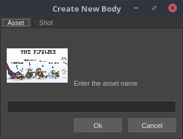Publishing
First up is to make a part of the assets: the model. Once you have created the model you will need to save it into the pipeline. This is called publishing. When an asset is published, the pipeline tools will make a copy of your file and save it into the pipline. In the case of the model, the pipeline will take your Maya file and make a copy of it to store in the model folder. Once you have published an asset it will be avalible for anyone to see and use. The way to access a file that someone else has published is through checking out the assets.
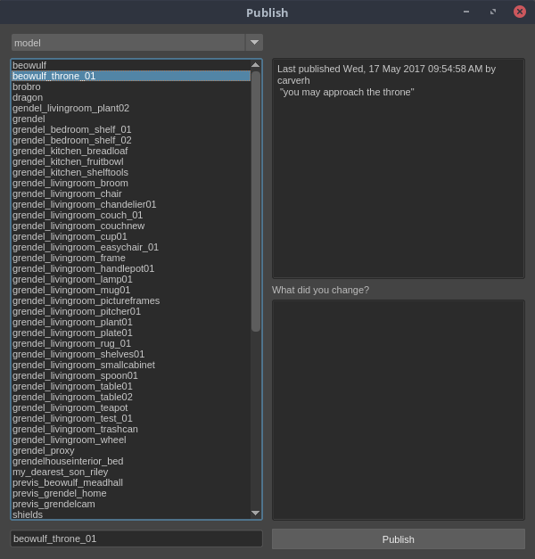When you publish an asset make sure that you leave a good comment about the changes that you made. This makes it easy to track important changes on the asset and will become crutial if ever you need to rollback (discussed later).
Check Out
To use an asset you need to check it out. Checking out is the opposite of publishing. When you checkout an asset the pipeline tools will create a copy of the production asset and save it to your personal files so that you can work on it. You can make what ever changes you need to it and when you are done you publish the asset again so that everyone can have access to your changes.
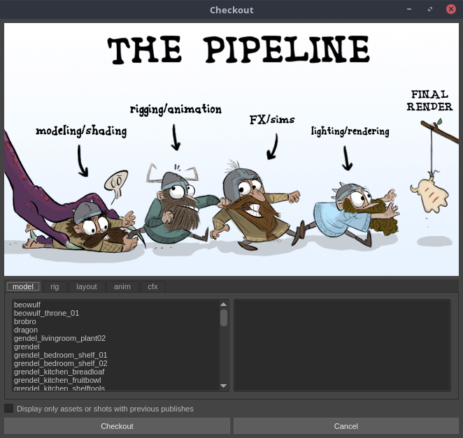Since the pipeline tools make a personal copy of the file for you, you can modify and save changes as you wish without worrying about changing the production version until you are ready to publish.
Multiple people can checkout the same asset and work on it at the same time. This is nice because it means that multiple people can look at, or do tests on or work on the the same file. However you need to watch out. Imagine a case where two people, Austin and Kalee, both are working on the model for Grendel. Austin is hard at work modeling Grendel's arms; it has taken him hours. Kalee has checked out Grendel's model as well to check on it's progress. Since Austin hasn't published his changes yet Kalee has an old version. She notices that Grendel's eyes are backwards and in a couple of seconds she fixes them. Austin finishes his changes and publish. Moments later Kalee publishes her changes, but her version doesn't include Austin's changes. There is not way to merge the changes, so the pipeline will use the model that was published most recently, in this case Kalee's version that has the eyes the right way but has the wrong arms. So make sure that you are comunicating will all the people that are working on your asset.
Now in the case of Austin and Kaylee it is likely that they would actually want to use Austin's version and just apply Kalee's quick changes to it. Thankfully there is a way to revert a production model to a previous version, roll back!
Rollback
When you publish an asset the pipeline will keep track of the history of that item. So at anytime if you need to revert to a previous verision of the asset you can rollback the changes.
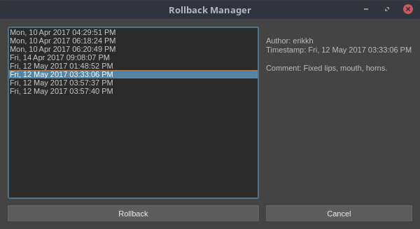In the case of Kalee and Austin (discussed in the checkout section), we see that Austin needs to restore his version. He would scroll through the revision history and find his version. If he doesn't remember the exact time of his publish he can look in the comment section for the descriptive comment that he wrote when he published it. Then he can roll back to his verision, re-do Kalee's changes and republish.
The Life of a Pipeline Element
Now let's see these in context of the life of an asset
- Story artists take the story concept and draw each acting moment and scene in the film.
- Vis Dev artists develop the look of objects and characters that are needed to help tell the story told by the story artists.
- I have not idea what happens in previs or how it gets into the pipeline
- Create asset
- Make and publish a model for the asset in Maya
- Make and publish a rig for the asset in Maya
- Create a shot
- Refrence the model and rig into the shot, make an animation in Maya, and publish it to the shot
- Create textures for the the asset in Mari
- Assemble the asset in Houdini using the models and textures created earlier and publish it to the asset.
- Checkout the shot in Houdini
- Bring in all of the various props for the shot in Houdini, add lights and then publish it to the shot
- Render the scene in Houdini
- Bring renders from Houdini into Nuke, and publish the composition to the shot
- Hand the composites off to the editor
- Wait for the awesome movie to come together
That is the general overview of the pipeline and what it is doing. Now we will move on to the different tools in the various softwares.
Houdini
Do you remember all of those neat things you learned back in the Maya section? Well, throw them out. They only partially relate to the Houdini pipeline tools and having them tightly coupled in your mind will lead to errors.
Lets take a look at Houdini
Go ahead and open the film verison of Houdini. Now at this point Houdini probably didn't load in the shelf like Maya did. To get there you will need to add it.
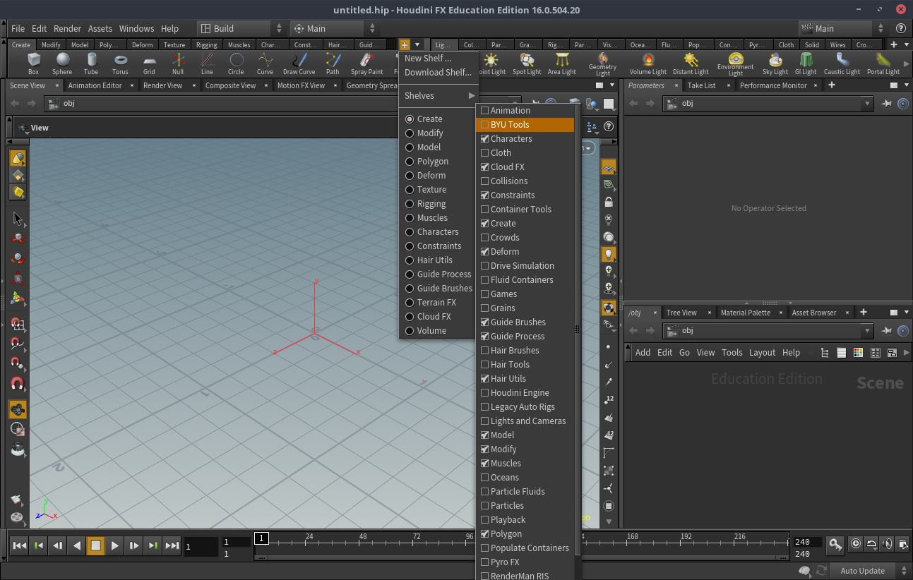With the tools shelf added in, let's take a look at all of the tools.
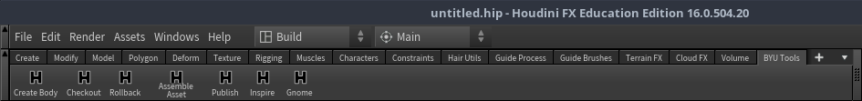Create Body
The create body tool here is actually the exact same as the one in Maya, so about forgetting everything what I mean is don't forget this one.
Assemble Asset
To understand how the checkout and publish buttons are different we first need to understand how the asseble asset tool works.
In Houdini the method of adding geometry to a scene is typicaly by using the tab menu in the Network View. In order to add our geometry to Houdini we first need to make digital assets for them. Once we have we will be able to simply tab in all of our assets into Houdini. The assemble asset tool creates the digital assets for you.
When you click assemble asset you will be greeted with a window that looks remarkably similar to the checkout window. Don't let it fool you! This is not how you will checkout assets in Houdini ever!
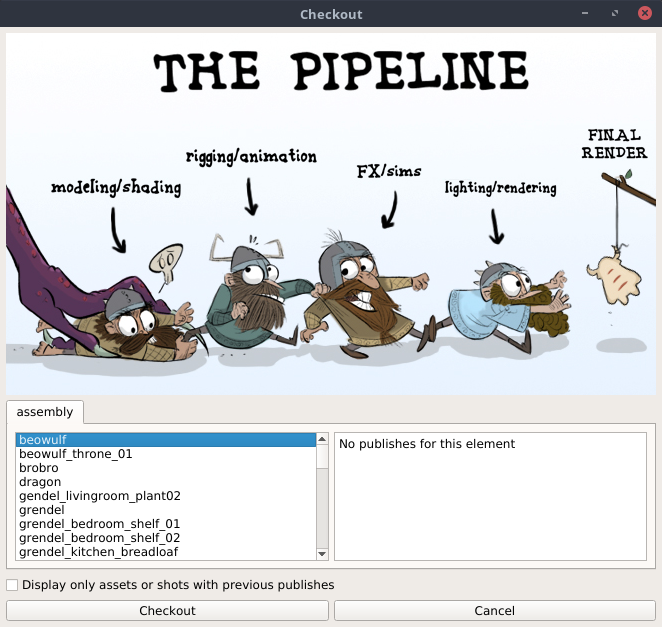Find the asset that you want to turn into a digital asset* and then click checkout. This will load in all of the alembics that maya has exported when you published it there, and create out of them a digtial asset. Once the digital asset is created you can add the shaders for the various objects into the digital asset. Once you are pleased with your work, select the digital asset, and then click publish. Now the digital asset is ready for anybody to tab into their scene
*Note: it is likely that the assemble asset window will tell you that there are "no publishes for this element". That is good. That means that nobody has assembled the asset yet. If there is a previous publish that means that the asset has already been assembled and you should be able to tab it into the network view without assembling it again.
Once the asset is assembled you no longer need to assemble it. You can just tab it in. If you click assemble asset again it will bring in all of the alembics from maya again but it won't bring in any of the shaders that you created.
Review
- Click assemble asset
- Click on the asset you wish to assemble
- Click checkout, which should lead you to here: 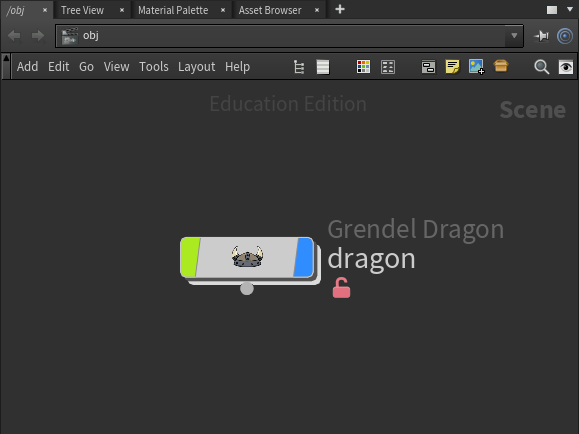
- Add shadders and perform whatever other edits 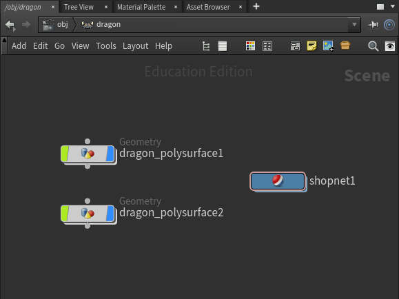
- Select the digital asset in the network view
- Click publish
If you need to make changes to the asset the instructions are a little different:
- Tab in the asset
- Select it in the network view
- Make the neccesary changes
- Select the digital asset in the network view
- Click publish
Checkout
Checkout is a little tricky in Houdini. If nothing is selected in the network view when you click checkout it will think you are trying to checkout at shot to work on lighting or fx.
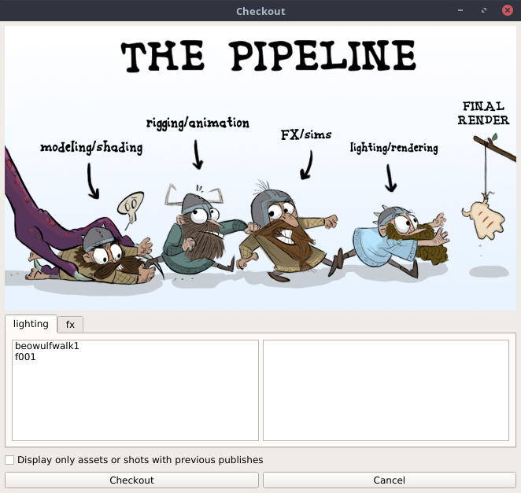If you have an asset selected in the network view then it will think that you are trying to checkout that asset. And all you will get is this notification that you did it succesfully. If you have something selected that is not an asset then nothing will happen.
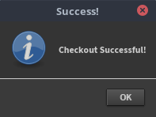Rollback
Publish
Inspire
Gnome
Advanced
With any luck at all you won't need this but if you are curious here is some more information about the insides of the pipeline. For even more information look at our git repository or talk to you local pipeline technition.
Switching deffinitions for Houdini Digital Assets
Glossary
- Animation
- Assets
- Body: bodies are just a shorter way to refer to both assets and shots. A shot is a body but not all bodies are shots; same for assets. You probably won't here about them outside of this documentation.
- Character Effects (CFX)
- Composition (comp)
- Designs
- Effects (FX)
- Element: elements are the building blocks of bodies.
- Layouts
- Lighting
- Materials
- Models
- Renders
- Rigs
- Shots
- Textures
- Visual Development (Vis Dev)